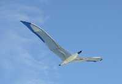
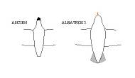
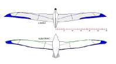
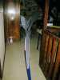
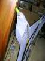
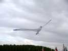

| Accueil | Albatros | Spiralier et Messager | Megoel | Indoor | Condor | Albatros 2 | Demoiselle | P |
|
 |
| Le premier Albatros... |

Bon, alors j'ai décidé de garder l'ancien dans son jus et de faire un Albatros Nouveau. Tant qu'à faire, je voulais donner un peu de souplesse à la forme de l'aile que je trouvais trop rigide, pas assez "bio". Et aussi modifier le volume du corps. En effet, j'avais noté avec déception dès le premier vol de l'Albatros que cet oiseau de 6 m, une fois en l'air, ne paraissait pas très grand ! J'ai voulu essayer de voir si cela ne tenait pas à la taille relative du corps, petit par rapport à l'aile, et j'ai donc plongé pour un corps nettement plus volumineux. De plus, de profil, le corps de l'Albatros et surtout la tête paraissaient plats donc pas très esthétiques. Il fallait faire du 3D... Conclusion : les modifs par rapport à l'ancien étaient telles qu'il valait mieux se lancer dans le neuf que de cochonner quelque chose d'insatisfaisant en gâchant les matériaux existants.
L'aile, d'abord : je la voulais moins pointue et moins courbée au bout et arquée dans la partie médiane. Combinaison de courbures pas facile à mettre en oeuvre ! Bon, j'ai fait un compromis, en tendant bien transversalement pour que la forme se maintienne, mais j'ai peur que par temps de pluie de nombreux plis se forment. On verra, il y a une certaine élasticité... J'ai ajouté un petit raidisseur oblique en bout d'aile pour arrondir la pointe, regagner un peu de surface et tendre tout le bord de fuite. J'ai gardé les tendeurs et whiskers comme sur l'ancien, pas besoin de réinventer la roue.
Pour le corps, après divers essais pas terribles, j'ai repris la formule de Megoel, en essayant d'alléger au maximum la partie avant dont le poids entraîne à piquer par vent faible. Donc mousse pour la tête, aussi évidée que possible. Pour le corps, un tronçon de canne à pêche, mais juste un tube de 5 pour la tête et la tension longitudinale. La poitrine est maintenue par 3 scions de canne (j'en ai plein !) bandés par 3 joncs de Carbone 2. Astuce : les 3 joncs sont réunis et le restent au démontage ce qui simplifie le remontage : un seul jonc à emboîter au lieu de 3, plus rapide à monter et pièce plus simple à fabriquer : un bout de durit avec ficelle au lieu d'une pièce plastique usinée et collée. De plus, ça s'emmêle moins ! Je reporterai cette astuce sur Megoel, ça l'allégera un peu et me facilitera le travail.
A l'arrière, j'ai mis une petite queue grise, comme celle de l'Albatros à Sourcils Noirs qui m'a servi de modèle.
Je vous passe les difficultés de la conception, de la réalisation du corps en volume et des diverses armatures dont la démontabilité devait être assurée... Mais je l'ai fini un vendredi à 17 h et je suis parti illico pour Tours, le premier vol a eu lieu à la Gloriette ! Le matin du samedi, car j'étais moyennement sûr de moi... Mais il a volé un moment, avec des défauts qui ne me surprenaient pas car je les avais déjà rencontrés sur le N° 1. Je savais donc comment y remédier, même si j'ai tout fait pour l'éviter car les corrections consistent le plus souvent à rajouter quelque chose qui complique et qui alourdit.